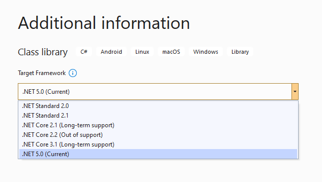
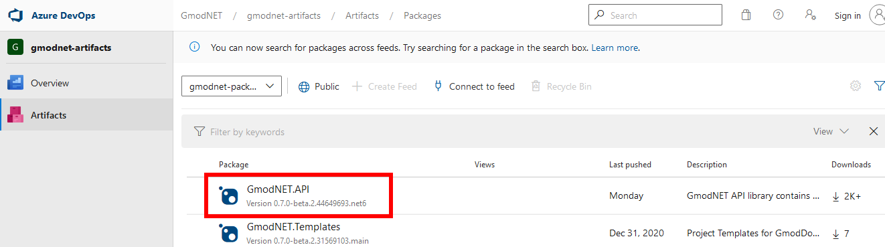
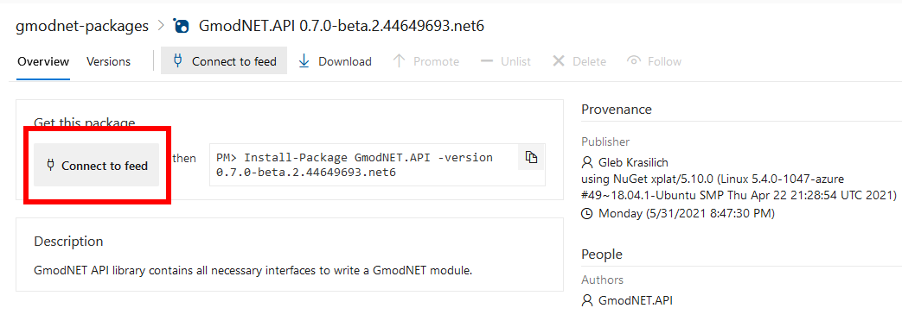
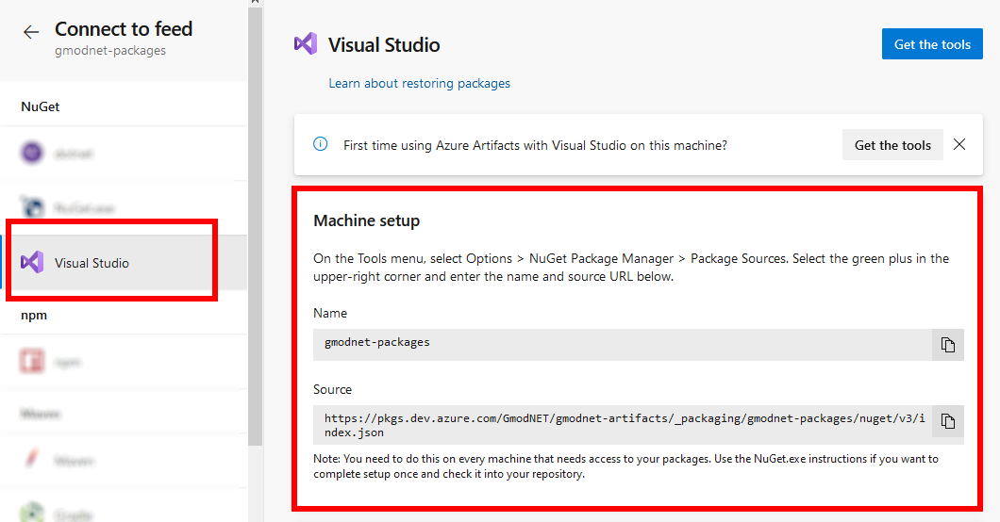
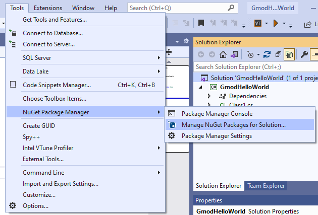
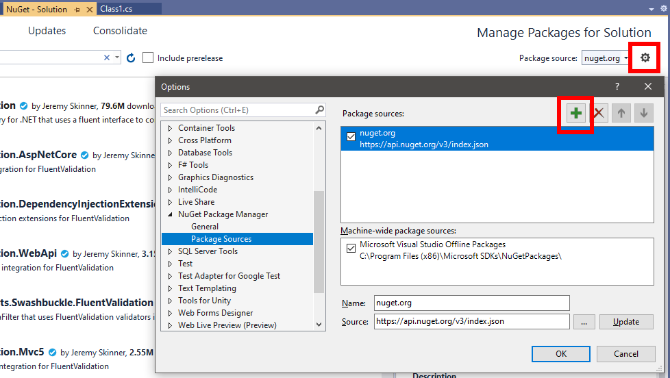
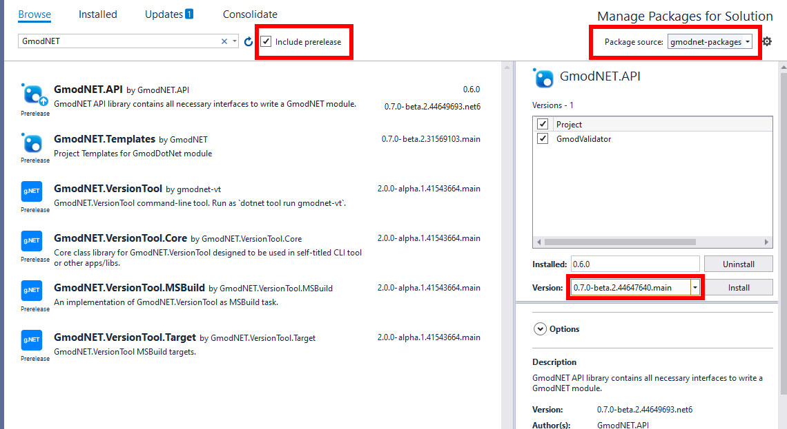
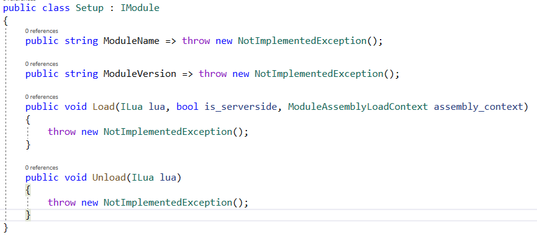

Warning
The nightly builds can be unstable. Please help us find bugs by reporting issues on GitHub.
Connect to the nightly builds and use it in your project
Connect to the latest version of Gmod.NET to use the newest features (main for .NET 5.0) or to test the .NET 6.0 Preview version on the net6 branch.
We'll create a project to test if we've got the latest version.
Requirements
- Visual Studio 2019
- Ensure at least these individual components are installed:
- .NET SDK
- NuGet Package manager
.NET 5.0if you want to use the nightlymainbranch
- Ensure at least these individual components are installed:
- The
.NET 6.0 Preview(link) if you want to use the nightlynet6branch. - Windows 10 (For more see the Visual Studio requirements)
- An internet connection
Start a .NET project
To test if we've got a working nightly version we'll create a test project.
- Start Visual Studio 2019
- Create a new project and solution
- When asked to pick a framework choose:
- For the
net6branches choose.NET 6.0 - In our case we'll go for the
mainbranch which is built for.NET 5.0
- For the
Adding the nightly builds to NuGet
- In the Gmod.NET README there is a link to the nightly builds
- Click GmodNET.API: 
- Click Connect to feed: 
- Note the Source link and name from the instructions: 
- In Visual Studio open the NuGet Package Manager: 
- Click the cog-wheel at the top right behind the default package source: 
- Click the green plus and enter the Name and Source you found at the nightly feed instructions (step 4).
- Close these settings with OK.
- Now select the newly added package source: 
- Ensure Include prerelease is selected
- Click GmodNET.API and install the version you'd like to use.
Test installation
- Implement the IModule interface. (Add
: IModulebehind the class name)- Note you can have Visual Studio implement the interface through the See potential fixes option that appears when you hover over the IModule error.
- Check the code generates to this result: 
- Build the project. If you get no errors you followed the instructions correctly and can now use the nightly builds.
Install the module in Garry's Mod
To use our module we need to install the same built version of Gmod.NET to Garry's Mod.
- Go to https://nightly.gmodnet.xyz/
- Download the pre-built version of Gmod.NET that you selected in NuGet earlier
- Install it in Garry's Mod
lua/bin
You can now install your own .NET modules to lua/bin/Modules and load them in Garry's Mod